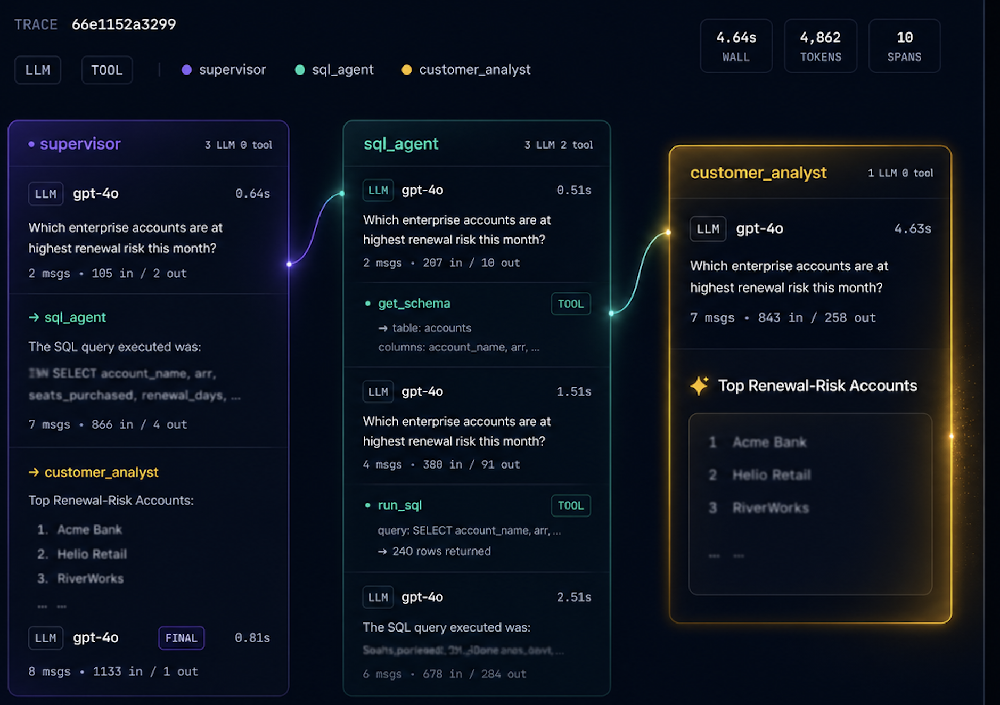
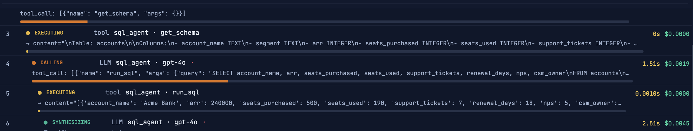
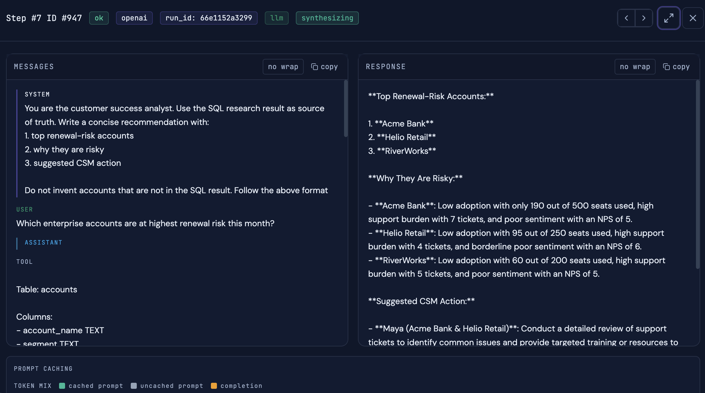
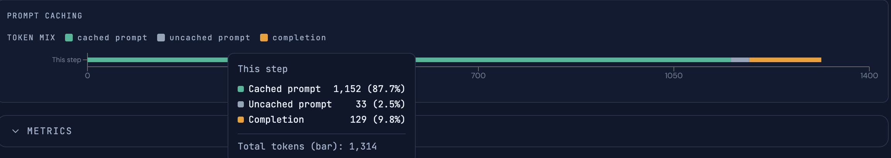

Run Timeline
Follow each run in exact execution order from first user input to final output.
MiniObserve gives you full-fidelity run timelines across LLM calls, tools, and workflow nodes so your team can debug faster and ship with confidence. Free and Open Source.

MiniObserve unifies every step of an agent run into a single trace view so you can inspect what happened, when it happened, and where it broke.
Follow each run in exact execution order from first user input to final output.
Track parent-child relationships across model calls, tools, and workflow nodes.
Inspect model I/O with metadata context for precise debugging and review.
Capture tool inputs, outputs, latency, and errors in one place.
Map spans to canonical route IDs to understand flow transitions clearly.
Spot slow steps and bottlenecks with per-span timing and run-level summaries.



Native callback support. Add MiniObserve to your existing graph.invoke() config in 3–4 lines. No structural changes needed.
Use the lightweight Tracer wrapper to capture every LLM call, tool call, and agent step with minimal code changes.
Point your coding agent at AGENTS.md and tell it to instrument your app. It handles installation, setup, and wiring automatically.
Run your agents.
Inspect timelines, prompts, responses, tools, and errors in MiniObserve.
Run isolated app tenants with per-API-key data separation. Start local with SQLite, then switch to Supabase with a single environment variable when you're ready to scale.
Tracing is the foundation to build with confidence.